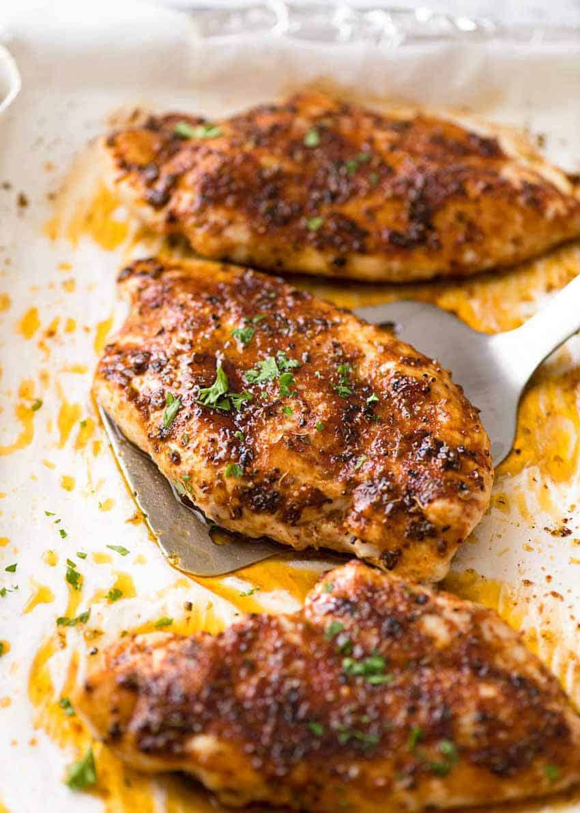

Baked Split Chicken Breast
All Recipes

Description
This is a very easy, but elegant, baked chicken breast recipe that looks
like you've spent hours in the kitchen when you've barely lifted a finger!
Servings: 2
Yield: 2
Ingredients
- 2 large bone-in chicken breast halves with skin
- Extra-virgin olive oil, 0.25 cups
- Garlic, minced, 0.5tsp
- Sea salt, coarse, 0.5tsp
- Black Pepper, cracked, 0.5tsp
- Rosemary, dried, 0.25tsp
- Basil, dried, 0.25tsp
Steps
-
Rub chicken breasts with olive oil and garlic; sprinkle with salt, black
pepper, rosemary, and basil. Arrange chicken in a large baking dish and
refrigerate for at least 45 minutes.
- Meanwhile, preheat oven to 375 degrees F (190 degrees C).
-
Bake in the preheated oven until chicken meat is no longer pink at the
bone and the juices run clear, 45 to 60 minutes. An instant-read
thermometer inserted in the thickest part of the breast meat should read
165 degrees F (75 degrees C).
- Plate and serve.
All Recipes